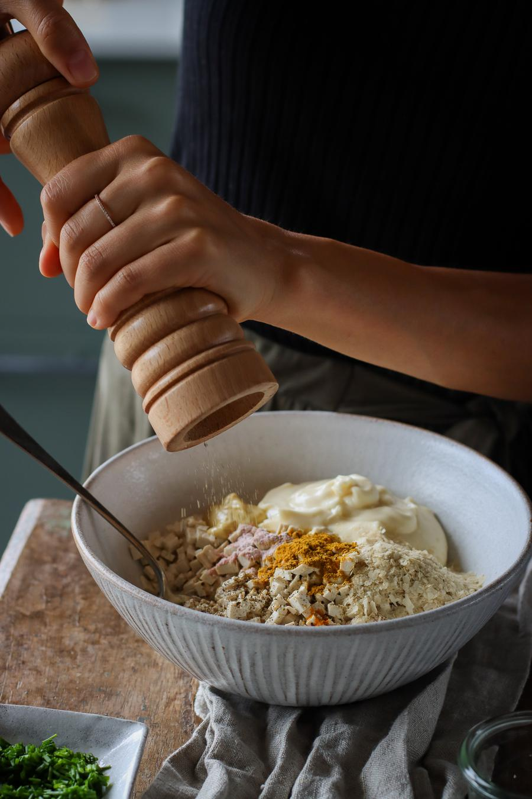
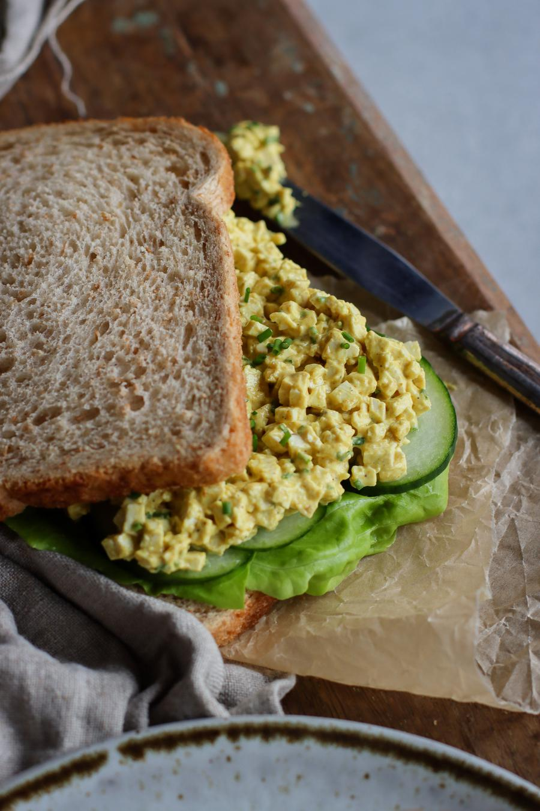
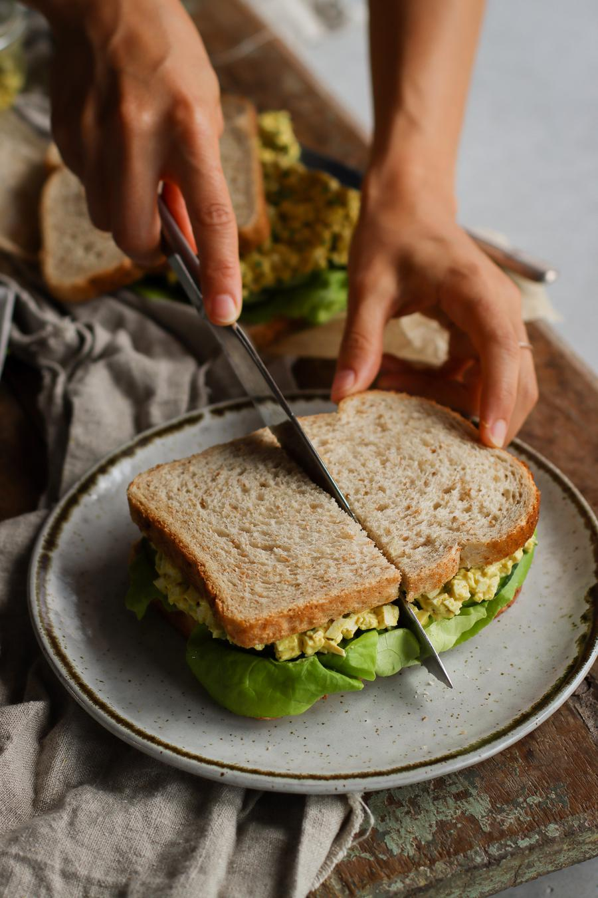

Vegan "Egg" Salad Sandwich

- 🍽️Sandwiches: 3
- 🍝Total time: 15 min
- ⏱️Prep time: 15 min
Ingredients
- 11.4 oz (325 g) firm tofu, pressed, drained
- ½ cup (120 mL) vegan mayonnaise
- 2 Tbsp (4 g) nutritional yeast flakes
- 2 Tbsp (6 g) chopped fresh chives
- 1½ tsp (7 mL) Dijon mustard
- ½ tsp curry powder
- ¼ tsp ground turmeric
- ¼ tsp kala namak†
- ¼ tsp ground black pepper
- 3 romaine lettuce leaves
- ½ cucumber, sliced
- 6 slices whole wheat bread
Directions
- Finely chop the pressed tofu into very small pieces. Transfer to a large bowl and mix together with the mayonnaise, nutritional yeast, chives, mustard, curry powder, turmeric, salt, and pepper.

- Assemble the sandwiches by adding a layer of lettuce, sliced cucumber, and a generous layer of "egg" salad on top of the bread.

- Cut in half if desired, and enjoy!

Notes
- † Kala namak, is a salt often used in South Asian cuisine. The sulphur compounds give the salt an egg-like smell and flavour.
Storage
- The assembled sandwiches are best when enjoyed on the same day.
- The "egg" salad can be stored in an airtight container in the fridge for up to 3 days.